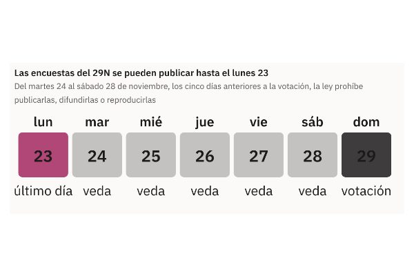

Actualidad · Cómo votar · España
Cómo votar en las elecciones generales del 29N: horario, qué llevar y cómo saber tu colegio
Los colegios abren el domingo 29 de noviembre de 9.00 a 20.00. Hace falta el DNI, el pasaporte o el carné de conducir, aunque estén caducados; la tarjeta censal, no. Están llamados a votar 38.728.356 electores, 1.615.127 por primera vez en unas generales.
Por Nacho G. del Álamo ·
Cada párrafo lleva una etiqueta: dato (cifra comprobable con las fuentes), patrón (relación que se repite, sin afirmar la causa), hipótesis (explicación posible, sin dos fuentes independientes) o contexto (hechos y declaraciones publicados por otros, enlazados). Cómo verificamos
ContextoLas elecciones generales del 29N se votan el domingo 29 de noviembre de 2026. Los colegios abren a las 9.00 y la votación sigue sin interrupción hasta las 20.00, según el artículo 84 de la ley electoral (LOREG). Antes, a las 8.00, se reúnen el presidente y los dos vocales de cada mesa para constituirla (artículo 80). Están llamados a votar 38.728.356 electores: 35.958.711 viven en España y 2.769.645 en el extranjero, según el INE. De los residentes en España, 1.615.127 votarán por primera vez en unas generales, porque han cumplido 18 años desde las de julio de 2023 (los más jóvenes son la generación de 2008).
Cómo saber tu colegio y tu mesa
DatoViene en la tarjeta censal que la Oficina del Censo Electoral envía a cada elector del 2 al 10 de noviembre, según el calendario del INE: el colegio, la dirección, la sección y la mesa. Si no la tienes, se consulta en la sede electrónica del INE. Cada elector solo puede votar en la sección y la mesa que le corresponden (artículo 86); el mismo domingo, cada colegio tiene un callejero con la mesa que corresponde a cada calle, según Público. Qué trae la tarjeta y cómo votó tu sección en 2023, en la tarjeta censal del 29N.
Qué llevar
DatoEl DNI, el pasaporte o el permiso de conducir, siempre que lleven tu fotografía, en original (artículo 85). La tarjeta de residencia que también cita la ley es para los extranjeros que votan en municipales y europeas: en las generales solo votan los españoles. Un documento caducado sirve: la Junta Electoral Central acordó en 1999 que «debe admitirse el documento identificativo aunque el mismo esté caducado», porque lo que se comprueba es la identidad. La tarjeta censal no hace falta para votar.
Las dos papeletas
DatoSe votan a la vez el Congreso y el Senado, con dos papeletas, dos sobres y dos urnas. La del Congreso es blanca y lleva la lista cerrada de un partido: se mete en el sobre tal cual, porque tachar, añadir o cambiar el orden de los nombres anula el voto (artículo 96). La del Senado es de color sepia, según el Real Decreto 605/1999, y es una sola para todos los partidos: hay que marcar con una cruz a los candidatos que quieras, de cualquier partido. Si se marcan más de los permitidos, el voto al Senado es nulo; si no se marca ninguno, cuenta como voto en blanco (artículo 96). Cada sobre es del mismo color que su papeleta. Quién va en cada lista, en las listas electorales del 29N.
| Circunscripción al Senado | Nombres que se pueden marcar como máximo |
|---|---|
| Las 47 provincias de la Península | 3 |
| Mallorca, Gran Canaria, Tenerife, Ceuta y Melilla | 2 |
| Menorca, Ibiza-Formentera, Fuerteventura, Lanzarote, La Palma, La Gomera y El Hierro | 1 |
ContextoFuente: artículo 166 de la LOREG. Cómo se repartieron los senadores en 2023, en esta pieza sobre el Senado.
En la mesa
DatoSe dice el nombre al presidente, los vocales comprueban que estás en la lista del censo y miran el documento, y le entregas los sobres cerrados; el presidente dice en voz alta tu nombre y «Vota», y tú mismo los metes en las urnas (artículo 86). Las papeletas se pueden elegir en la cabina o llevarlas de casa, siempre en el sobre oficial: el voto en un sobre o una papeleta que no sean del modelo oficial es nulo. Quien no sepa leer o tenga una discapacidad que le impida elegir la papeleta o entregarla puede ir con una persona de su confianza (artículo 87), que la ley completa con un procedimiento para personas ciegas o con discapacidad visual.
DatoSi llegas justo a las 20.00, no te quedas fuera: el presidente anuncia el cierre y deja votar a los electores que estén en el local o en el acceso que todavía no lo hayan hecho, y a nadie más (artículo 88). Quien pidió el voto por correo y se lo aceptaron ya no puede votar en persona (el voto por correo, provincia a provincia).
Los que votan desde fuera
DatoUno de cada 14 electores de las generales vive en el extranjero, y no vota en un colegio en España: según el calendario del INE, envía el voto por correo al consulado hasta el 24 de noviembre o lo deposita en la urna del consulado del 21 al 26. Su peso cambia mucho de una provincia a otra. En Ourense es el 30,8 % del censo, y en Lugo, el 22,6 %; las cuatro primeras son las provincias gallegas. Madrid es la que más tiene en número, 498.874, pero son el 9,0 % de sus electores. El porcentaje más bajo es el de Ciudad Real, con el 2,0 %.
Ver la tabla
| Circunscripción | Electores | Residentes en España | Residentes en el extranjero | % en el extranjero |
|---|---|---|---|---|
| Ourense | 360.252 | 249.128 | 111.124 | 30,8 |
| Lugo | 341.031 | 264.112 | 76.919 | 22,6 |
| Pontevedra | 926.408 | 776.260 | 150.148 | 16,2 |
| A Coruña | 1.106.690 | 928.212 | 178.478 | 16,1 |
| Zamora | 162.251 | 138.147 | 24.104 | 14,9 |
| Asturias | 979.077 | 835.489 | 143.588 | 14,7 |
| S. C. de Tenerife | 927.138 | 802.038 | 125.100 | 13,5 |
| León | 425.983 | 370.903 | 55.080 | 12,9 |
| Salamanca | 304.762 | 268.176 | 36.586 | 12,0 |
| Soria | 77.069 | 68.009 | 9.060 | 11,8 |
| Melilla | 63.968 | 57.089 | 6.879 | 10,8 |
| Almería | 541.093 | 487.815 | 53.278 | 9,8 |
| Cantabria | 523.083 | 473.210 | 49.873 | 9,5 |
| Madrid | 5.536.913 | 5.038.039 | 498.874 | 9,0 |
| La Rioja | 259.798 | 238.491 | 21.307 | 8,2 |
| Granada | 791.066 | 728.641 | 62.425 | 7,9 |
| Burgos | 300.630 | 278.257 | 22.373 | 7,4 |
| Las Palmas | 939.211 | 872.976 | 66.235 | 7,1 |
| Ávila | 136.598 | 126.996 | 9.602 | 7,0 |
| Navarra | 537.194 | 500.413 | 36.781 | 6,8 |
| Lleida | 326.300 | 304.391 | 21.909 | 6,7 |
| Palencia | 137.466 | 128.729 | 8.737 | 6,4 |
| Barcelona | 4.398.757 | 4.133.070 | 265.687 | 6,0 |
| Gipuzkoa | 597.859 | 561.932 | 35.927 | 6,0 |
| Málaga | 1.292.972 | 1.218.939 | 74.033 | 5,7 |
| Teruel | 106.251 | 100.360 | 5.891 | 5,5 |
| Huesca | 175.954 | 166.279 | 9.675 | 5,5 |
| Cáceres | 339.508 | 320.973 | 18.535 | 5,5 |
| Bizkaia | 959.702 | 909.301 | 50.401 | 5,3 |
| Girona | 575.269 | 545.107 | 30.162 | 5,2 |
| Ceuta | 65.591 | 62.234 | 3.357 | 5,1 |
| Baleares | 870.718 | 828.603 | 42.115 | 4,8 |
| Tarragona | 626.161 | 599.563 | 26.598 | 4,2 |
| Alicante | 1.359.229 | 1.303.765 | 55.464 | 4,1 |
| Zaragoza | 760.968 | 730.065 | 30.903 | 4,1 |
| Valladolid | 440.219 | 422.478 | 17.741 | 4,0 |
| Valencia | 2.067.797 | 1.984.563 | 83.234 | 4,0 |
| Murcia | 1.144.308 | 1.099.682 | 44.626 | 3,9 |
| Álava | 267.325 | 256.995 | 10.330 | 3,9 |
| Segovia | 121.460 | 117.282 | 4.178 | 3,4 |
| Cádiz | 1.042.157 | 1.007.105 | 35.052 | 3,4 |
| Córdoba | 648.792 | 627.881 | 20.911 | 3,2 |
| Guadalajara | 208.773 | 202.546 | 6.227 | 3,0 |
| Castellón | 448.196 | 435.080 | 13.116 | 2,9 |
| Albacete | 308.541 | 299.580 | 8.961 | 2,9 |
| Jaén | 515.524 | 500.560 | 14.964 | 2,9 |
| Toledo | 569.549 | 553.863 | 15.686 | 2,8 |
| Sevilla | 1.606.972 | 1.563.407 | 43.565 | 2,7 |
| Cuenca | 151.410 | 147.707 | 3.703 | 2,4 |
| Badajoz | 552.081 | 538.991 | 13.090 | 2,4 |
| Huelva | 408.911 | 399.666 | 9.245 | 2,3 |
| Ciudad Real | 393.421 | 385.613 | 7.808 | 2,0 |
ContextoLos permisos si trabajas ese domingo, el voto por correo paso a paso y qué hacer si te toca mesa están en la guía de dónde y cómo votar el 29N y en esta pieza sobre las mesas electorales. Desde las 20.00, el mapa irá mostrando el recuento.
Preguntas frecuentes
¿A qué hora abren y cierran los colegios electorales el 29N?
La votación empieza a las 9.00 y sigue sin interrupción hasta las 20.00 (artículo 84 de la LOREG). Quien esté en el local o en el acceso a las 20.00 y no haya votado todavía puede votar.
¿Qué documento hay que llevar para votar en las elecciones generales?
El DNI, el pasaporte o el permiso de conducir, con fotografía y en original. Según la Junta Electoral Central, se admite aunque esté caducado. La tarjeta censal no es obligatoria.
¿Cómo sé dónde me toca votar?
En la tarjeta censal, que trae el colegio y la mesa, o en la sede electrónica del INE. Más detalles en la tarjeta censal del 29N.
¿A cuántos candidatos puedo marcar en la papeleta del Senado?
A tres como máximo en las circunscripciones provinciales, a dos en Mallorca, Gran Canaria, Tenerife, Ceuta y Melilla, y a uno en el resto de islas (artículo 166 de la LOREG). Si se marcan más, el voto al Senado es nulo.
¿Cuántos electores hay en las elecciones generales del 29N?
38.728.356: 35.958.711 residentes en España y 2.769.645 en el extranjero, según el INE.
Dónde y cómo votar el 29N · Tarjeta censal del 29N · El voto por correo · Listas electorales del 29N
Método y fuentes
- Qué se compara
- El horario, los documentos, las papeletas y el cierre de la votación según la ley electoral y la Junta Electoral Central, y el censo de las elecciones generales del 29N por circunscripción, con los residentes en el extranjero.
- Límites
- Es una guía de servicio, no un análisis. El censo es el de la nota del INE del 9 de octubre. Los plazos de los residentes en el extranjero son los del calendario del INE. Para casos concretos manda la Junta Electoral de cada zona.
- Cómo se calcula
- Porcentaje de residentes en el extranjero: electores residentes en el extranjero entre el total de electores de cada circunscripción, de la nota del INE. Script: actualidad/src/resumenes/como_votar_29n.py. Cifras reproducibles con los scripts del expediente de la pieza. Metodología de Actualidad · Metodología del Atlas
- Fuentes
- INE, censo electoral para las elecciones generales del 29 de noviembre de 2026 (nota de prensa, 9-10-2026)
- INE, Oficina del Censo Electoral, plazos de interés para los electores
- BOE, Ley Orgánica 5/1985, del Régimen Electoral General (artículos 80, 84 a 88, 96 y 166)
- Junta Electoral Central, acuerdo de 13 de mayo de 1999 sobre documentos caducados
- BOE, Real Decreto 605/1999, de regulación complementaria de los procesos electorales (artículo 4)
- Público, dónde tengo que votar el 29N
- Autoría
- Nacho G. del Álamo
- Revisión de datos y texto
- Nacho G. del Álamo, 20 de noviembre de 2026
- Publicado · actualizado
- 20 de noviembre de 2026 · 20 de noviembre de 2026
- Correcciones
- Ninguna.
Serie «Camino al 29N»: 173 piezas
- Si la abstención fuera un partido, en 2023 habría quedado por delante del ganador en más de la mitad de las grandes ciudades y en la mitad de las secciones de España
- Voto por correo para las elecciones generales del 29N: el plazo para pedirlo acaba el jueves 19; en 2023, una de cada tres solicitudes llegó en las dos últimas semanas
- Encuestas y debate: tras el cara a cara de 2023, 10 de 14 encuestadoras ampliaron la ventaja del PP; trece días después ganó por 1,4 puntos
- Elecciones generales: una de cada tres secciones cambió de ganador entre 2019 y 2023
- Elecciones generales: las encuestas dan al PSOE entre el 25,5 y el 33,3 %
- Elecciones generales: Vox baja al 17 % en la encuesta diaria de El País
- Encuestas elecciones generales 2026, hoy 18 de noviembre: el PSOE, a dos puntos o menos del PP
- Encuestas elecciones generales 2026, hoy 19 de noviembre: Sondaxe deja al PSOE a 0,7 puntos del PP
- Debate Sánchez Feijóo: hora, dónde verlo y quién gana el cara a cara
- Elecciones generales: el modelo de encuestas da escaño al Frente Amplio en 5 de sus 17 provincias
- Elecciones generales: en Gijón, Vox sacó en 2023 su mejor resultado en Somió, el barrio más rico: 17,0 %
- Encuestas elecciones generales 2026, hoy 20 de noviembre: el PP gana en las cinco, por entre 2,0 y 4,6 puntos
- Veda de encuestas: hasta cuándo se pueden publicar las del 29N
- Estás aquíCómo votar en las elecciones generales del 29N: horario, qué llevar y cómo saber tu colegio
- A qué hora se sabrán los resultados de las elecciones generales del 29N
- Participación en las elecciones generales del 29N: las encuestas prevén un 73,1 %, 2,7 puntos más que en 2023
- Programa electoral de PP, PSOE, Vox y Frente Amplio: qué propone cada uno el 29N
- Getafe-Atlético: en la ciudad del Coliseum, el PSOE pasó de ganar en 112 de las 122 secciones a ganar en 74, y el PP se quedó a 2.182 votos
- El derbi sevillano se juega en barrios del PP: en Nervión, el del Sánchez-Pizjuán, ganó en 37 de 41 secciones; en la ciudad, el PSOE fue primero en 286 de 521
- A una semana del 29N, la mediana de las encuestas da al PP 3,4 puntos de ventaja, 1,2 menos que hace siete días; el lunes 23 es el último día para publicarlas
- Ver las 173 piezas de la serie
Más datos: elecciones generales del 29N de 2026: fecha y escaños por provincia · resultados de las elecciones generales 2026 (29N) y los de 2023 · dónde y cómo votar el 29N: colegio electoral, voto por correo y plazos.
Sigue leyendo
 ParticipaciónParticipación en las elecciones generales del 29N: las encuestas prevén un 73,1 %, 2,7 puntos más que en 2023
ParticipaciónParticipación en las elecciones generales del 29N: las encuestas prevén un 73,1 %, 2,7 puntos más que en 2023 Crónica de la semanaA una semana del 29N, la mediana de las encuestas da al PP 3,4 puntos de ventaja, 1,2 menos que hace siete días; el lunes 23 es el último día para publicarlas
Crónica de la semanaA una semana del 29N, la mediana de las encuestas da al PP 3,4 puntos de ventaja, 1,2 menos que hace siete días; el lunes 23 es el último día para publicarlas Getafe-AtléticoGetafe-Atlético: en la ciudad del Coliseum, el PSOE pasó de ganar en 112 de las 122 secciones a ganar en 74, y el PP se quedó a 2.182 votos
Getafe-AtléticoGetafe-Atlético: en la ciudad del Coliseum, el PSOE pasó de ganar en 112 de las 122 secciones a ganar en 74, y el PP se quedó a 2.182 votos Sevilla-BetisEl derbi sevillano se juega en barrios del PP: en Nervión, el del Sánchez-Pizjuán, ganó en 37 de 41 secciones; en la ciudad, el PSOE fue primero en 286 de 521
Sevilla-BetisEl derbi sevillano se juega en barrios del PP: en Nervión, el del Sánchez-Pizjuán, ganó en 37 de 41 secciones; en la ciudad, el PSOE fue primero en 286 de 521 A qué hora los resultadosA qué hora se sabrán los resultados de las elecciones generales del 29N
A qué hora los resultadosA qué hora se sabrán los resultados de las elecciones generales del 29N
Veda de encuestasVeda de encuestas: hasta cuándo se pueden publicar las del 29N